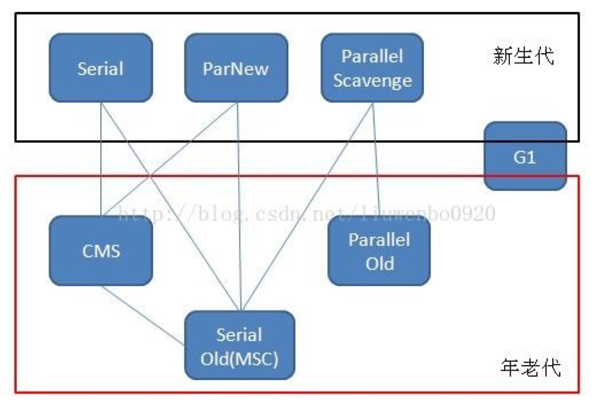

Java JVM - GC
内存分配与回收
堆空间分类
为了更好回收内存和更快分配内存，堆空间一般分为两大类新生代和老年代，这两大类细分又可以分为四类：
- 新生代，eden 区、s0 区、s1 区。
- eden 区为新生对象的分配区域。
- s0 和 s1 为触发 Young GC(YGC)，新生对象被放置的区域。
- 老年代，即 tentired 区。
- 放置大年龄或大对象的区域。
堆空间分配
堆空间分配一般有三种策略：
- 对象优先在 eden 区分配。
- 当 eden 去没有足够空间时会发起一次 minor GC 或 Young GC（新生代 GC）。
- YGC 存活的对象会被移到 Survivor 区，
- S0, S1 交换使用：
- S0 和 S1 会保持一块不使用，触发 YGC 时，对象会被复制到未使用的那一块，并清空使用的那块转移到未使用区域。
- YGC 移送对象过大时直接进入老年代。
- 大对象直接进入老年代。
- 大对象指的是需要大量连续内存空间的对象。比如字符串，数组等。
- 这么做的原因是，避免大对象因为分配机制而重复复制发生的低效率。
- 长期存活的对象会进入老年代。
- S 区域对象每经过一个 YGC 存活，年龄会增加。
- 当年龄大到一定程度会被晋升到老年代（会复制对象）。
-XX:MaxTenuringThreshold指定年龄。
如何判断对象是否死亡
引用计数
给对象添加一个引用计数器，每当一个地方引用到这个对象计数器加一，反之减一。
那么任何计数为 0 的对象就是应该被回收的对象。
- 优点：实现简单效率高。
- 缺点：一般的 GC 不会采用这种算法，因为它很难解决循环引用的问题。
可达性分析
即以某些 GC Root 对象为起点，从这些节点开始向下搜索，走过的节点为引用链，当一个对象不存在任何引用链，则证明此对象不可用。
GC root 对象：
- 虚拟机栈中引用的对象
- 方法区中静态类引用的对象
- 方法区中常量引用的对象
- 本地方法栈中 Native 方法 引用的对象
引用的类型
无论可达性分析还是引用计数，都涉及到了引用的概念。那么有关引用还是有很多区别的。
| 引用类型 | 被垃圾回收时间 | 用途 | 生存时间 |
|---|---|---|---|
| 强引用 | 从来不会 | 对象的一般状态 | JVM停止运行时终止 |
| 软引用 | 当内存不足时 | 对象缓存 | 内存不足时终止 |
| 弱引用 | 正常垃圾回收时 | 对象缓存 | 垃圾回收后终止 |
| 虚引用 | 正常垃圾回收时 | 跟踪对象的垃圾回收 | 垃圾回收后终止 |
强引用
强引用((StrongReference))即最常见的引用。
Object strongReference = new Object();
如果一个对象具有强引用，那么 GC 就算抛出 OOM 异常也不会回收这个对象。
软引用
如果内存空间不够（比如说触发 OOM 之前）会被 GC 回收。
// 强引用
String strongReference = new String("abc");
// 软引用
String str = new String("abc");
SoftReference<String> softReference = new SoftReference<String>(str);
JVM 实现中，当内存不足时，JVM 首先将软引用中的对象引用置为null，然后通知垃圾回收器进行回收：
应用场景：一般用于实现内存敏感的高速缓存，比如浏览器的前进后退按钮。
// 获取浏览器对象进行浏览
Browser browser = new Browser();
// 从后台程序加载浏览页面
BrowserPage page = browser.getPage();
// 将浏览完毕的页面置为软引用
SoftReference softReference = new SoftReference(page);
// 回退或者再次浏览此页面时
if(softReference.get() != null) {
// 内存充足，还没有被回收器回收，直接获取缓存
page = softReference.get();
} else {
// 内存不足，软引用的对象已经回收
page = browser.getPage();
// 重新构建软引用
softReference = new SoftReference(page);
}
弱引用
弱引用一旦被 GC 扫描到就会被回收，由于 GC 进程一般优先级不会太高，所以不一定会很快发现那些具有弱引用的对象。
String str = new String("abc");
WeakReference<String> weakReference = new WeakReference<>(str);
str = null;
以下情况会引起对象被强引用引用。
String str = new String("abc");
WeakReference<String> weakReference = new WeakReference<>(str);
// 弱引用转强引用
String strongReference = weakReference.get();
虚引用
虚引用并不会决定对象的生命周期。如果一个对象仅持有虚引用，那么它就和没有任何引用一样，在任何时候都可能被垃圾回收器回收
主要用于跟踪对象被垃圾回收的状态
String str = new String("abc");
ReferenceQueue queue = new ReferenceQueue();
// 创建虚引用，要求必须与一个引用队列关联
PhantomReference pr = new PhantomReference(str, queue);
垃圾收集算法
标记-清除
- 标记阶段，标记处所有要回收的对象。
清理阶段，统一清理要回收的对象。
- 优点
- 效率高，简单
- 缺点
- 会产生大量空间碎片
标记-复制
将内存分为大小相同的两块，每次使用其中的一块。
当其中的一块耗尽后将仍然存活的对象复制到另一块，并进行回收。
主流YGC 的垃圾回收算法
标记-整理
过程跟标记-清理算法差不多。但是不直接对对象进行回收而是让所以对象向一端移动，然后清理端边界以外的内存。
分代收集
主流垃圾收集算法
即根据对象存活周期将内存分为几块，不同的代际使用不同的回收算法。
- 新生代，复制算法
每次垃圾收集都能发现大批对象已死，只有少量存活。因此选用复制算法，只需要付出少量
存活对象的复制成本就可以完成收集。 - 老年代，使用标记整理算法
因为对象存活率高不一定有额外空间保证分配，就必须采用“标记—清理”或“标
记—整理”算法来进行回收，不必进行内存复制，且直接腾出空闲内存。
垃圾收集器
因为新生代和老年代的回收算法不同所以会使用不同的垃圾回收器。

Serial
即串行单线程收集器。使用复制算法。其中垃圾回收的某一个阶段会发生 STW (Stop The World) 即暂停所有程序的执行再执行垃圾回收。
单线程垃圾收集效率，因此 Serial 垃圾收集器依然是 java 虚拟机运行在 Client 模式下默认的新生代垃圾收集器。
ParNew
是 Serial 收集器的多线程版本，ParNew 收集器默认开启和 CPU 数目相同的线程数，可以通过-XX:ParallelGCThreads 参数来指定。
是很多 java 虚拟机运行在 Server 模式下新生代的默认垃圾收集器。
Serial Old
Serial Old 是 Serial 垃圾收集器年老代版本，单线程，使用标记-整理算法。
CMS
老年代垃圾收集器，其最主要目标是获取最短回收停顿时间。
使用了多线程的标记-清除算法。
处理过程如下：
- 初始标记：发生STW，并记录下与 root 相连的对象，速度极快。
- 并发标记：同时开启 GC 和用户线程，并记录可达对象。
- 重新标记：STW，并更新对可达对象的标记。
- 并发清除：开启用户线程并开始对标记区域进行回收。
缺点：
- CPU 资源敏感
- 无法处理浮动垃圾
- 使用标记清除容易产生内存碎片
G1
目前垃圾收集器理论发展的最前沿成果。
特点如下：
- 并发与并行，充分利用多核环境，缩短 stop-the-world 时间。
- 分代收集，使用分代收集。
- 空间整合，整体是标记整理回收，局部复制回收，不会产生太多内存碎片。
- 可预测的停顿，可以非常精确控制停顿时间。
- 分区回收，G1 收集器避免全区域垃圾收集，它把堆内存划分为大小固定的几个独立区域，优先回收垃圾最多的区域。